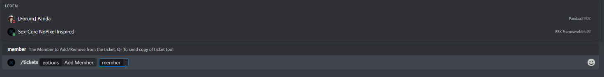
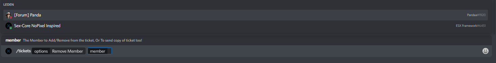

Where do we not give support for in the support channels?
- We do not give support if the core is edited and this is the problem.
- We do not give support for outdated ESX versions.
- We do not give support if people want to edit the core.
- Only give support in the correct channel.
- We do not suggest any resources that aren't from one of our partners.
Aditional information
- If the client your supporting his comportment is not mundane tell your head.
- If you don't know a question don't leave it there, try to tag another online supporter.
- Make sure your chat behaviour is correct No: sexism, racism or other inappropriate content.
How do i add people to a ticket?:

↳ Use the bot syntax "/" and go to the option "Tickets" and then select "Add Member" 
↳ Then choose the required member to add. "Only use this when your allowed to!"
How do i remove someone from a ticket?
↳ Use the bot syntax "/" and go to the option "Tickets" and then select "Remove Member" 
↳ Then select the required member to remove. "Only use this when your allowed to!"
How do i close the ticket?
↳ Select the "Close Ticket" option and press enter. "Only use this when the ticket is finished!"